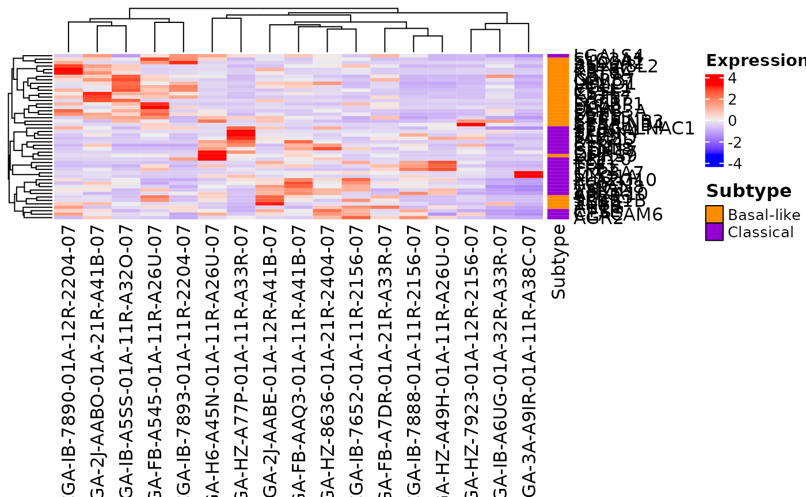
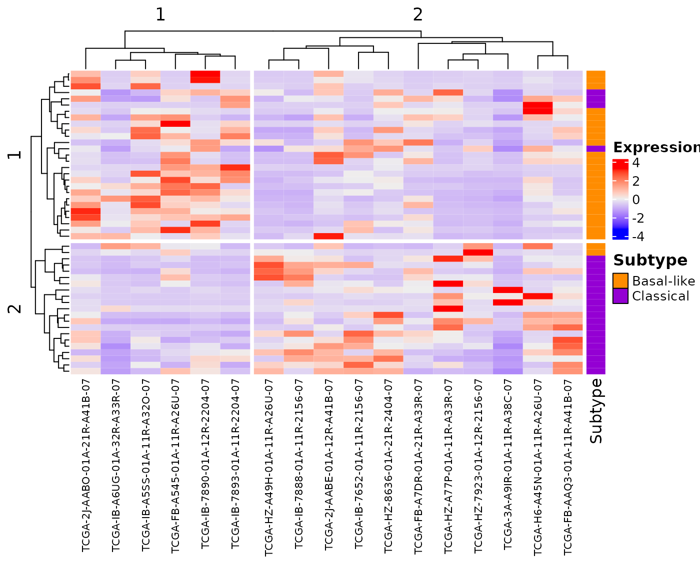
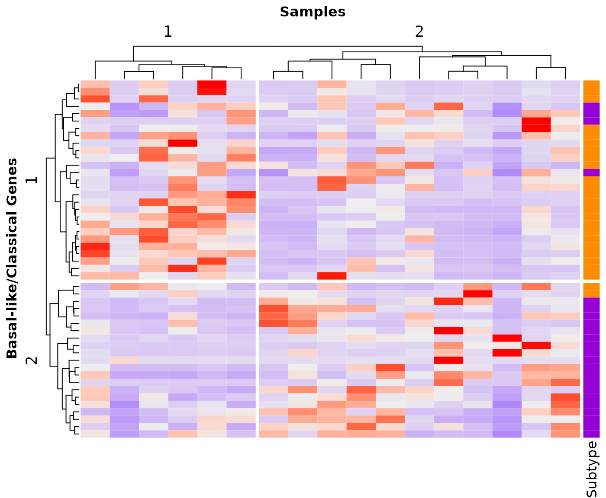
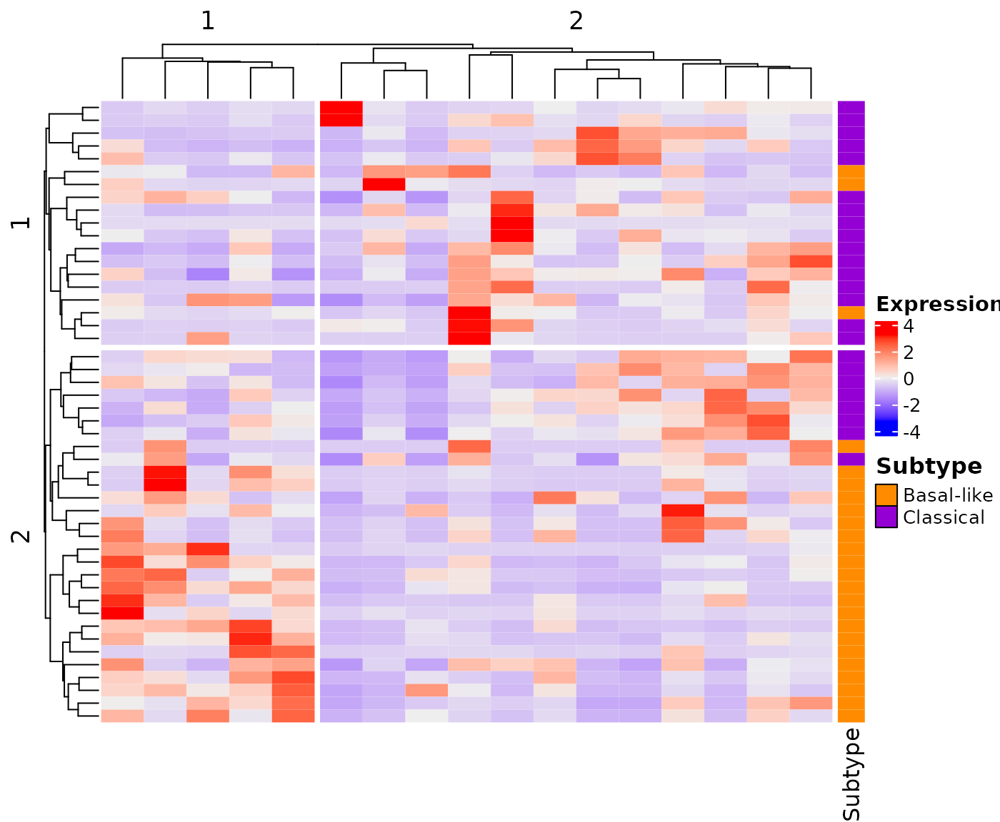

vignettes/BasalClassicalHeatmap.Rmd
BasalClassicalHeatmap.RmdPackage: BasalClassicalHeatmap
Authors: Astrid Deschênes [aut, cre] (https://orcid.org/0000-0001-7846-6749), Daniel King
[dtc], David A. Tuveson [fnd] (https://orcid.org/0000-0002-8017-2712)
Version: 0.0.4
Compiled date:
2022-12-15
License: Artistic-2.0
The BasalClassicalHeatmap package and the underlying BasalClassicalHeatmap code are distributed under the Artistic license 2.0. You are free to use and redistribute this software.
If you use the BasalClassicalHeatmap package for a publication, we would ask you to cite the following:
Deschênes A, King D and Tuveson DA. BasalClassicalHeatmap: Heatmap using basal-like and classical gene list and RNA-seq expression data. R package version 0.0.2, https://adeschen.github.io/BasalClassicalHeatmap/
You can also replace it by the Research Resource Identifier (RRID), as example:
BasalClassicalHeatmap version 0.0.2, RRID: SCR_022949
If you use one of the available Basal-like/Classical gene list, the appropriate paper should be referenced.
For Moffitt et al 2015
Moffitt RA, Marayati R, Flate EL et al. Virtual microdissection identifies distinct tumor- and stroma-specific subtypes of pancreatic ductal adenocarcinoma. Nat Genet. 2015 Oct;47(10):1168-78. doi: 10.1038/ng.3398. Epub 2015 Sep 7. PMID: 26343385; PMCID: PMC4912058.
For Tiriac et al. 2018
Tiriac H, Belleau P, Engle DD et al. Organoid Profiling Identifies Common Responders to Chemotherapy in Pancreatic Cancer. Cancer Discov. 2018 Sep;8(9):1112-1129. doi: 10.1158/2159-8290.CD-18-0349. Epub 2018 May 31. PMID: 29853643; PMCID: PMC6125219.
For Miyabayashi et al. 2020
Miyabayashi K, Baker LA, Deschênes A et al. Intraductal Transplantation Models of Human Pancreatic Ductal Adenocarcinoma Reveal Progressive Transition of Molecular Subtypes. Cancer Discov. 2020 Oct;10(10):1566-1589. doi: 10.1158/2159-8290.CD-20-0133. Epub 2020 Jul 23. PMID: 32703770; PMCID: PMC7664990.
Pancreatic ductal adenocarcinoma (PDAC) is an aggressive form of cancer. Bulk transcriptomic analyses distinguished between two main classes of tumors: classical and basal-like . The basal-like tumors show a more aggressive clinical behavior (Moffitt et al. 2015).
This package enables Basal-like/Classical classification of pancreatic tumor samples by generating a heatmap based on transcriptomic data. There is three different lists of genes available in the package: the original list from Moffitt et al. 2015 (Moffitt et al. 2015); the updated list from Miyabayashi et al. 2020 (Miyabayashi et al. 2020) and the list from Tiriac et al. 2018 (Tiriac et al. 2018) that has been developed for pancreatic ductal adenocarcinoma (PDAC) organoids.
The devtools package is required to install this package.
You need to start R (version “4.2” or higher) and enter:
if (!requireNamespace("devtools", quietly = TRUE))
install.packages("devtools")
## Install the latest version of BasalClassicalHeatmap
devtools::install_github('adeschen/BasalClassicalHeatmap')The function createHeatmap() is needed to generate the classification heatmap. This function required:
The transcriptomic expression must be in a data.frame format and have one column per sample and one column with the name of the genes represented in the rows.
A demo dataset called demo_PDAC_TCGA is available in the BasalClassicalHeatmap package. This dataset is composed of few pancreatic ductal adenocarcinoma samples from TCGA. The column for the gene names is called ‘GENE’.
data("demo_PDAC_TCGA")
head(demo_PDAC_TCGA[, (ncol(demo_PDAC_TCGA)-4):ncol(demo_PDAC_TCGA)], nrow=3)## TCGA-HZ-8636-01A-21R-2404-07 TCGA-IB-A6UG-01A-32R-A33R-07
## ADORA2B 4.668218e-06 3.443706e-06
## AGR2 1.351521e-03 1.840877e-04
## AGR3 6.481299e-05 1.278232e-05
## AKR1C3 1.040258e-04 3.881818e-05
## AMIGO2 3.257307e-05 1.032804e-04
## ANO1 1.190121e-04 2.996840e-05
## TCGA-2J-AABO-01A-21R-A41B-07 TCGA-IB-A5SS-01A-11R-A32O-07 GENE
## ADORA2B 2.258423e-06 1.399798e-05 ADORA2B
## AGR2 1.166542e-03 4.845146e-04 AGR2
## AGR3 1.142631e-04 7.797597e-05 AGR3
## AKR1C3 1.340612e-04 5.114997e-05 AKR1C3
## AMIGO2 6.070233e-05 6.050099e-05 AMIGO2
## ANO1 1.047437e-04 1.183015e-04 ANO1There are 3 Basal-like/Classical gene lists available in the BasalClassicalHeatmap package:
The Moffitt et al 2015 list corresponds to the original Basal-like/Classical classification gene list (Moffitt et al. 2015). The list contains 50 genes: 25 Basal-like and 25 Classical genes.
The Tiriac et al 2018 list has been developed to classify PDAC organoids (Tiriac et al. 2018). This list contains 88 genes: 22 Basal-like and 62 Classical genes.
The Miyabayashi et al 2020 is an update of the original Moffitt Basal-like/Classical classification gene list (Miyabayashi et al. 2020). Gene symbols that were not found anymore in most recent versions of Ensembl have been replaced with their newest symbols. As the Moffitt gene list, this list contains 25 Basal-like and 25 Classical genes.
You can use you own gene list as long as the genes are in a data.frame containing those 2 columns: ‘SYMBOL’ and ‘Class’. The ‘Class’ column contains the classification formatted as ‘Basal-like’ and ‘Classical’ (with respect to upper letters).
## Moffitt et al 2015
data("Moffitt_2015")
## Tiriac et al 2018
data("Tiriac_2018")
## Miyabayashi et al 2020
data("Miyabayashi_2020")
## Each dataset contains 2 columns
## The first column has the gene symbols
## The second column the class assignation (Basal-like or Classical)
head(Moffitt_2015)## SYMBOL Class
## 1 VGLL1 Basal-like
## 2 UCA1 Basal-like
## 3 S100A2 Basal-like
## 4 LY6D Basal-like
## 5 SPRR3 Basal-like
## 6 SPRR1B Basal-likeThe createHeatmap() function is needed to generate the classification heatmap.
This first example uses a dataset composed of few pancreatic ductal adenocarcinoma samples from TCGA. It shows the heatmap generated with the default options.
## First, fix the seed value
set.seed(142)
## Load Moffitt et al 2015 gene list
data("Moffitt_2015")
## Load demo PDAC TCGA expression data
data("demo_PDAC_TCGA")
## Create heatmap with default parameters
## The column for the gene names in the rna_data data.frame has
## the default name "GENE"
createHeatmap(gene_list=Moffitt_2015, rna_data=demo_PDAC_TCGA)
The createHeatmap() function encapsulates the ComplexHeatmap::Heatmap function. All parameters, except right_annotation, from ComplexHeatmap::Heatmap function can be passed to the createHeatmap() function.
## Library needed to use gpar() function
library(grid)
## First, fix the seed value
set.seed(122)
## Load Moffitt et al 2015 gene list
data("Moffitt_2015")
## Load demo PDAC TCGA expression data
data("demo_PDAC_TCGA")
## Create heatmap with personalized parameters
## The column for the gene names in the rna_data data.frame
## has the default name "GENE"
## The clustering uses Spearman method
## The rows and columns are split in 2 groups
## The row names are not shown
createHeatmap(gene_list=Moffitt_2015, rna_data=demo_PDAC_TCGA,
clustering_distance_rows = "spearman",
clustering_distance_columns="spearman",
row_split=2, column_split=2, column_names_gp = gpar(fontsize = 8),
show_row_names=FALSE)
The output of the createHeatmap() function is a ComplexHeatmap::Heatmap-class object that can be used as a parameter in the draw() function to enable further personalization of the graph.
## Required library
library(ComplexHeatmap)
## First, fix the seed value
set.seed(188)
## Load Moffitt et al 2015 gene list
data("Moffitt_2015")
## Load demo PDAC TCGA expression data
data("demo_PDAC_TCGA")
## Create heatmap
## The column for the gene names in the rna_data data.frame
## has the default name "GENE"
gg <- createHeatmap(gene_list=Moffitt_2015, rna_data=demo_PDAC_TCGA,
clustering_distance_rows = "spearman",
clustering_distance_columns="spearman",
row_split=2, column_split=2, show_row_names=FALSE,
show_column_names=FALSE)
## Assign row and column titles
uu <- draw(gg, show_heatmap_legend=FALSE,
column_title = "Samples", row_title="Basal-like/Classical Genes",
column_title_gp=gpar(fontsize="12", fontface="bold"),
row_title_gp=gpar(fontsize="12", fontface="bold"))
To ensure reproducible results, the set.seed() function should be call before calling the createHeatmap() function.
## First, fix the seed value to ensure reproducible results
set.seed(144)
## Load Miyabayashi et al 2020 gene list
data("Miyabayashi_2020")
## Load demo PDAC TCGA expression data
data("demo_PDAC_TCGA")
## Create heatmap
createHeatmap(gene_list=Miyabayashi_2020, rna_data=demo_PDAC_TCGA,
row_split=2, column_split=2, show_row_names=FALSE, show_column_names=FALSE)
This work was supported by the Lustgarten Foundation, where David A. Tuveson is a distinguished scholar and Director of the Lustgarten Foundation–designated Laboratory of Pancreatic Cancer Research.
The results shown here are in part based upon data generated by the TCGA Research Network: https://www.cancer.gov/tcga.
Here is the output of sessionInfo() on the system on
which this document was compiled:
## R version 4.2.1 (2022-06-23)
## Platform: x86_64-pc-linux-gnu (64-bit)
## Running under: Ubuntu 20.04.4 LTS
##
## Matrix products: default
## BLAS: /usr/lib/x86_64-linux-gnu/openblas-pthread/libblas.so.3
## LAPACK: /usr/lib/x86_64-linux-gnu/openblas-pthread/liblapack.so.3
##
## locale:
## [1] LC_CTYPE=en_US.UTF-8 LC_NUMERIC=C
## [3] LC_TIME=en_US.UTF-8 LC_COLLATE=en_US.UTF-8
## [5] LC_MONETARY=en_US.UTF-8 LC_MESSAGES=en_US.UTF-8
## [7] LC_PAPER=en_US.UTF-8 LC_NAME=C
## [9] LC_ADDRESS=C LC_TELEPHONE=C
## [11] LC_MEASUREMENT=en_US.UTF-8 LC_IDENTIFICATION=C
##
## attached base packages:
## [1] grid stats graphics grDevices utils datasets methods
## [8] base
##
## other attached packages:
## [1] BasalClassicalHeatmap_0.0.4 ComplexHeatmap_2.12.1
## [3] knitr_1.41 BiocStyle_2.24.0
##
## loaded via a namespace (and not attached):
## [1] circlize_0.4.15 shape_1.4.6 GetoptLong_1.0.5
## [4] xfun_0.35 bslib_0.4.1 purrr_0.3.4
## [7] colorspace_2.0-3 vctrs_0.5.1 htmltools_0.5.4
## [10] stats4_4.2.1 yaml_2.3.6 rlang_1.0.6
## [13] pkgdown_2.0.6 jquerylib_0.1.4 glue_1.6.2
## [16] BiocGenerics_0.42.0 RColorBrewer_1.1-3 matrixStats_0.63.0
## [19] foreach_1.5.2 lifecycle_1.0.3 stringr_1.5.0
## [22] ragg_1.2.2 GlobalOptions_0.1.2 codetools_0.2-18
## [25] memoise_2.0.1 evaluate_0.19 IRanges_2.30.1
## [28] fastmap_1.1.0 doParallel_1.0.17 parallel_4.2.1
## [31] highr_0.9 som_0.3-5.1 BiocManager_1.30.19
## [34] cachem_1.0.6 desc_1.4.2 S4Vectors_0.34.0
## [37] jsonlite_1.8.4 systemfonts_1.0.4 fs_1.5.2
## [40] textshaping_0.3.6 rjson_0.2.21 png_0.1-8
## [43] digest_0.6.31 stringi_1.7.8 rprojroot_2.0.3
## [46] clue_0.3-63 cli_3.4.1 tools_4.2.1
## [49] magrittr_2.0.3 sass_0.4.4 cluster_2.1.3
## [52] crayon_1.5.2 rmarkdown_2.18 iterators_1.0.14
## [55] R6_2.5.1 compiler_4.2.1